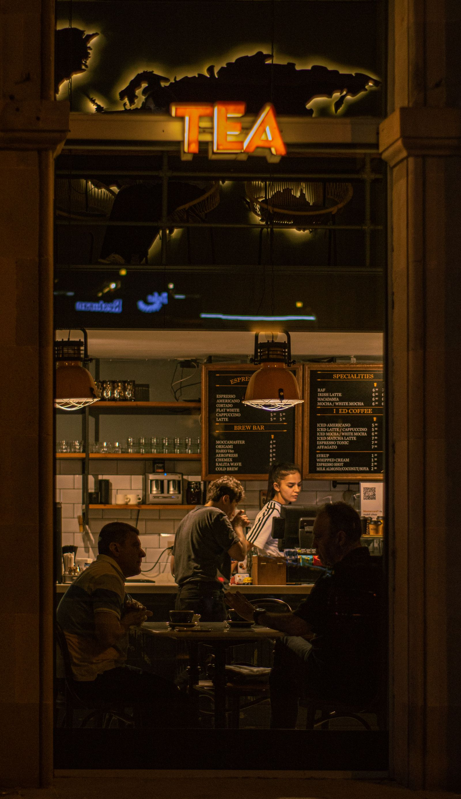

You know the good tables. Get comped for posting them.
Other parents plan their weekends around your posts. SIGNL connects creator moms with local family restaurants, bakeries, salons and attractions that comp you a visit in exchange for one honest post, live within 48 hours and disclosed. You pick the offers that fit real family life, on your schedule.

Your feed.
SIGNL is free for creators. Always. Businesses pay the platform. You never pay to join, to list, or to get booked.
Local businesses comp local creators a meal, a service or an experience, and creators post honestly within 48 hours.
Invite other creators with your personal link and earn Momentum points: +3 per sign-up, +10 per approval. Points order the creator list businesses see, so the creators who build the roster get picked first. Paid cash campaigns sit on top of comps, and Headliners (15,000+ followers) are first in line for them.
How SIGNL works for you
Claim your founding spot
Apply free in the app and get a decision or a clear status within 2 business days.
Claim offers that fit your life
When your market opens, local businesses post comp offers with exactly what is included, how many people it covers and the visit window. Claim only the ones you actually want. There is no quota and no schedule set by SIGNL.
Visit, post, done
Show up like a real customer, redeem with your in-app code, and post honestly within 48 hours with a clear disclosure that the visit was comped. Every on-time post builds your Momentum and your Local Impact Score.
The comps moms actually claim
Family life is the content. These are the offers built for it, from weekend tables with the kids to the solo hour you have earned.
Eat, play, recharge
If local families do it, a local business can comp it on SIGNL.
- Family restaurant
- Brunch spot
- Bakery / donut shop
- Ice cream / gelato
- Play cafe / kids attraction
- Hair salon
- Nail salon
- Massage / spa hour
- Clothing boutique
- Family photo session
Every offer, in the open
Before you claim anything, the offer states exactly what is comped, how many people it covers, and the window you can visit in. No vague promises, no surprises at the register: comps redeem inside the app on your single-use code, never at the business's point of sale.
Your record is your resume
Every delivered post builds your reliability record and Local Impact Score. Businesses see both before they choose, so a clean, on-time record gets you picked first, and at 15,000 followers and up it puts you first in line for paid cash campaigns.
Written for exactly who you are
SIGNL has a page for the way you actually post. If this one is not you, one of these is.
College creators
Free meals and coffee near campus, posts that fit between classes, and a campus badge on your profile. See the college creators page →
Creator dads
Wings, BBQ, barbers and game-day spots, comped for the guy the group chat already trusts. See the creator dads page →
Food creators
You already post every meal. Claim the comped ones, build your record, and get picked first. See the food creators page →
Every creator
The full picture: tiers, rules, Momentum points and the application. See the main creator page →
Questions, answered straight
I post about local family life. Is SIGNL actually for me?
Yes. Parents plan meals out, birthdays and weekends around people they trust, and local businesses know it. Family restaurants, bakeries, attractions and salons all run comp offers on SIGNL, and creators who post about real family life in their city are exactly who those businesses ask for. Your tier is set by your follower count across your platforms, starting at 500 followers in the Neighbors band.
Does it cost anything to join?
No. SIGNL is free for creators. Always. Businesses pay the platform. You never pay to join, to list, or to get booked. On standard visits your compensation is the comp itself: the meal, service or experience the business provides. The only cut SIGNL ever takes is 3 percent of a paid rate you set yourself, if a business books you at it. You keep the other 97 percent.
Can I bring my kids on a comped visit?
Every offer states up front how many people the comp covers, and family friendly businesses say on the offer whether kids are welcome. A family spot that wants parent creators will say so, so you never have to guess or arrange anything in the moment. If an offer covers one, treat it as your hour: plenty of moms use the salon, nail and coffee offers exactly that way.
I do not have free evenings. When do visits happen?
Whenever you choose. You claim only the offers that fit your life, and plenty of them are weekday lunches, weekend family spots and daytime services. There is no quota and no schedule set by SIGNL, and you set your own weekly visit cap in the app. Claim what fits, skip the rest.
What exactly do I have to post, and how fast?
On every comped visit you post the Standard Visit: 1 post or reel plus 1 story that shares the post about the real visit, live within 48 hours, with a clear disclosure that the visit was comped. Honest is the whole point: no business can require a positive post, ever.
Claim your founding spot
Sign up now to be a founding creator, right in the SIGNL app. Founding profiles are reviewed in sign-up order across the 37 founding markets, your founding priority never expires, and markets open over the next 30 to 90 days as each roster completes.
Sign-ups live in the SIGNL app
Create your account and build your founding profile in a few minutes: your market and home city, your handles, your tier band and what you post about. It is free, and it always will be for creators.
Create my founding creator account
Already signed up? Sign in at app.joinsignl.com